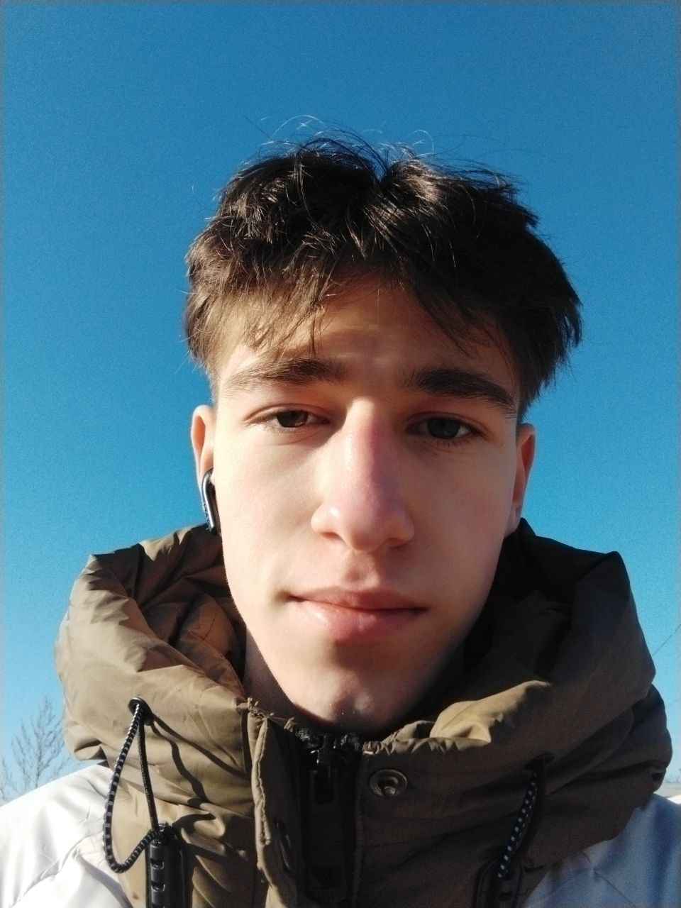

I’m a Unity C# game developer with over two years of non-commercial experience. My journey into game development began with a curiosity about how games work under the hood, leading me to develop a strong interest in coding and game mechanics.
🔧 Skills and Experience: Unity: Having experience in creating 2D/3D games, with a basic understanding of Unity’s physics, animations, and UI systems. C# Programming: Familiar with object-oriented programming (OOP) and the principles of SOLID. SDK Integration: Experience working with UnityAds SDK for monetization and ad management in games. Version Control: Familiar with GitHub for managing and collaborating on projects.
🌱 Continuous Learning: Constantly enhancing my programming skills and deepening my knowledge in game development. Level B1 English (Intermediate), working to improve my proficiency for better communication and understanding more technical documentation.
🎯 Personal Qualities: Goal-oriented and dedicated to delivering high-quality game experiences. Passionate about solving problems and finding creative solutions in game development.
💡 Why Game Development? I've always been fascinated by how games function behind the scenes, especially when interacting with in-game mechanics.